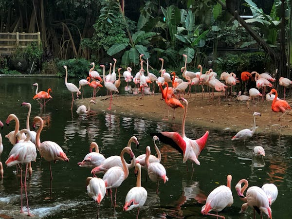

FLAMINGOS
Flamingos are famous for their vibrant pink feathers, long legs, and graceful necks. Their color comes from the food they eat, such as algae and shrimp, which are rich in carotenoids.
These social birds live in large colonies and are often seen standing on one leg. Flamingos feed by filtering water through their beaks to catch small organisms.
Flamingos are found in shallow lakes, lagoons, and wetlands in parts of Africa, Asia, the Americas, and Europe. Their synchronized group movements are a spectacular sight!
WHERE WILL YOU FIND THEM
You will find the flamingos at pen F3, beside the water gardens in the zoo.